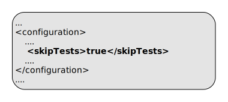

ep:install-product
Full name:
com.tibco.ep:ep-maven-plugin:1.5.0-SNAPSHOT:install-product
Description:
Install product zip and tgz artifacts if not already installed.
This goal scans through the project dependencies and if a product zip or tgz artifact is not installed, it is installed into the $TIBCO_EP_HOME directory.
Dependencies with scope provided are skipped.
A markersDirectory is used to track if the artifact has already been installed - hence manually removing this directory will cause the artifacts to be re-installed. This directory is only created if there is a need to install an artifact.
To detect a manual installation of the product, a file specified by productValidationFile is used. If this file exists, then the product installation is not attempted.
If the plugin does install a zip, then an md5 sum of the original zip is saved - this allows installation of a newer version of the zip at a later time. This can happen with SNAPSHOTS.
Attributes:
- Requires a Maven project to be executed.
- Binds by default to the lifecycle phase: validate.
Optional Parameters
| Name | Type | Since | Description |
|---|---|---|---|
| <dtmProductValidationFile> | String | 1.0.0 |
File to check if DTM product has been installed externally - if this exists, then product installation is not attempted. Relative to productHome. Example use in pom.xml:  Default value is: distrib/tibco/dtm/deploy/dtm.kds. |
| <dtmSupportValidationFile> | String | 1.2.0 |
File to check if DTM support has been installed externally - if this exists, then support installation is not attempted. Relative to productHome. Example use in pom.xml:  Default value is: distrib/tibco/devbin/epadmin. |
| <ignoreLeaks> | String[] | 1.3.0 |
List of class names to ignore in leak detection. This is processed to a CSV value to include in unit testing and in jar manifest file. Example use in pom.xml:  |
| <markersDirectory> | String | 1.0.0 |
Directory to store flag files. Relative to productHome. Example use in pom.xml:  Default value is: dependency-maven-plugin-markers. |
| <productHome> | File | 1.0.0 |
Product home location. This path is resolved in the following way :
Example use in pom.xml: 
Example use on commandline:  User property is: com.tibco.ep.ep-maven.product. |
| <sbProductValidationFile> | String | 1.0.0 |
File to check if SB product has been installed externally - if this exists, then product installation is not attempted. Relative to productHome. Example use in pom.xml:  Default value is: distrib/tibco/sb/deploy/sb.kds. |
| <skipTests> | boolean | 1.0.0 |
Set this to 'true' to skip running tests, but still compile them. Example use in pom.xml: Example use on commandline:  Default value is: false. User property is: skipTests. |
| <skipTestsx> | boolean | - | (no description) Default value is: false. User property is: skipTests. |
Parameter Details
<dtmProductValidationFile>
File to check if DTM product has been installed externally - if this exists, then product installation is not attempted.
Relative to productHome.
Example use in pom.xml:
- Type: java.lang.String
- Since: 1.0.0
- Required: No
- Default: distrib/tibco/dtm/deploy/dtm.kds
<dtmSupportValidationFile>
File to check if DTM support has been installed externally - if this exists, then support installation is not attempted.
Relative to productHome.
Example use in pom.xml:
- Type: java.lang.String
- Since: 1.2.0
- Required: No
- Default: distrib/tibco/devbin/epadmin
<ignoreLeaks>
List of class names to ignore in leak detection. This is processed to a CSV value to include in unit testing and in jar manifest file.
Example use in pom.xml:
- Type: java.lang.String[]
- Since: 1.3.0
- Required: No
<markersDirectory>
Directory to store flag files.
Relative to productHome.
Example use in pom.xml:
- Type: java.lang.String
- Since: 1.0.0
- Required: No
- Default: dependency-maven-plugin-markers
<productHome>
Product home location. This path is resolved in the following way :
- If property com.tibco.ep.ep-maven.product is set, use that, else
- If environment variable TIBCO_EP_HOME is set, use that, else
- Use localrepository/../product-group/product-artifact/product-version (so default is ~/.m2/product-group/product-artifact/product-version)
Example use in pom.xml:
Example use on commandline:
- Type: java.io.File
- Since: 1.0.0
- Required: No
- User Property: com.tibco.ep.ep-maven.product
<sbProductValidationFile>
File to check if SB product has been installed externally - if this exists, then product installation is not attempted.
Relative to productHome.
Example use in pom.xml:
- Type: java.lang.String
- Since: 1.0.0
- Required: No
- Default: distrib/tibco/sb/deploy/sb.kds
<skipTests>
Set this to 'true' to skip running tests, but still compile them.
Example use in pom.xml:
Example use on commandline:
- Type: boolean
- Since: 1.0.0
- Required: No
- User Property: skipTests
- Default: false